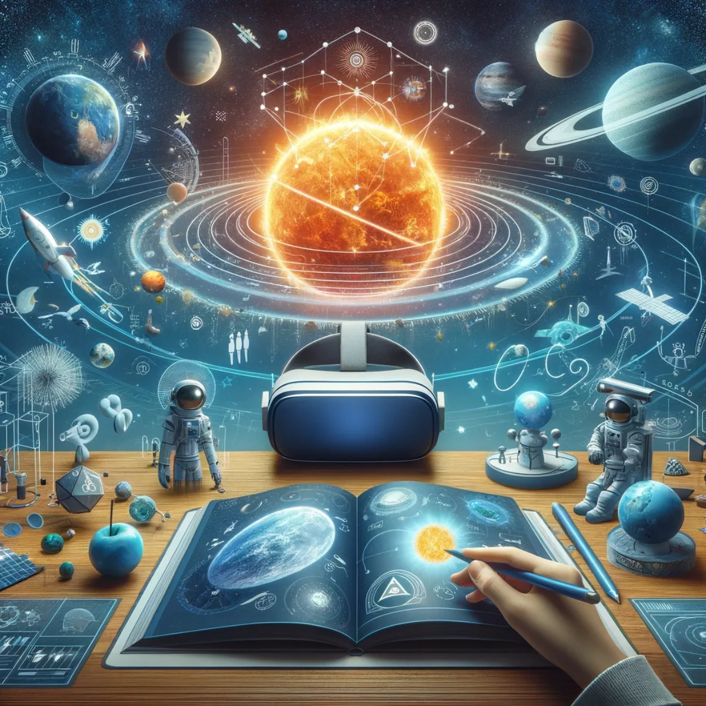
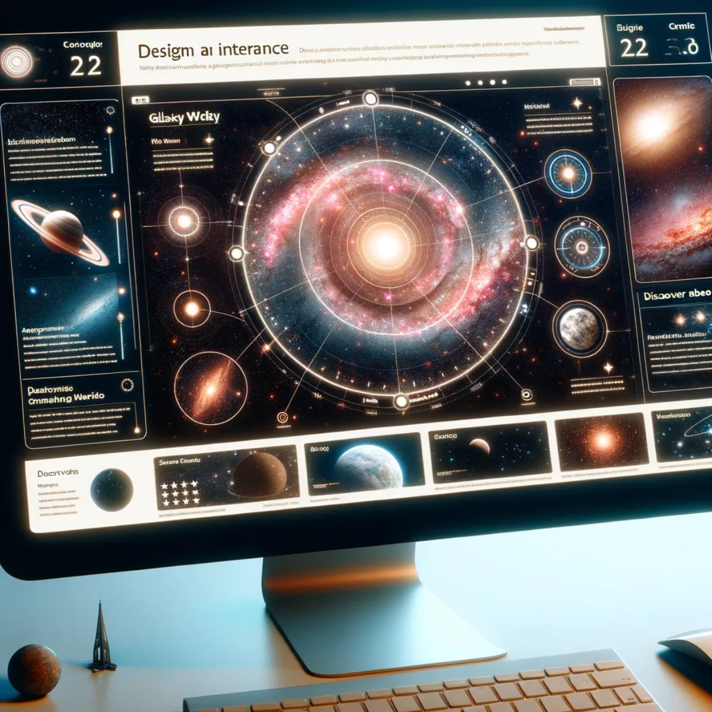

Pathways / Events, music & play
Space Weather & Climate
News, education and live data from the frontiers of space: build your own virtual reality studio and dashboards, owned by you and shaped to how you want to follow space weather, evolving as the science does.

News at the frontiers of space and virtual reality
VR News Reading Studio
Step into the future of news broadcasting by building your own VR Space Weather News Reading Studio. As Solar Sunspot Cycle 25 moves through its high-activity years, this is a place to shape a state-of-the-art environment that keeps you and your audience up to date with factual reporting and live data. The digital interface puts you at the heart of unfolding stories, blending live data feeds with the vast expanse of space as your backdrop. You interact with global events in real time, not just a spectator but a participant, and the studio is yours to own and grow rather than rent.

Your gateway to the cosmos
VR Space Weather Education
Build your own VR Space Weather Education space, where the solar system becomes your classroom. Learn hands-on, exploring celestial phenomena and coming to understand the dynamics of space weather patterns, solar flares and more, all within a visually rich virtual reality you shape to how you learn best. It's a tool you own and keep, one that grows with your curiosity rather than a course you rent by the term.

Connect. Collaborate. Co-create.
Partner With Us
Co-create the art of synergy and help bring Space Weather News to the world through the 24-hour news cycle and educational platforms. This is built for collaboration, an ongoing project where people from across the globe build together and each keep a stake in what they make. With shared tools and a network map that highlights connections, we open real possibilities for partnerships that carry this advanced information to hundreds of millions of students and researchers, pushing the boundaries of what we can achieve together.

Unravelling the universe, data point by data point
Open Source NASA Data
Build your own window on the cosmos with open source NASA data. With live feeds, interactive charts and data visualisation tools, you assemble a dashboard that puts the universe's pulse at your fingertips and stays yours. Monitor space weather, track celestial events, and follow the latest from NASA's frontier-breaking discoveries, arranged the way you want to read them.
From Indian skies to global innovations
Open Source ISRO Data
Bring open source ISRO data into your own setup and explore where technology and discovery meet. Live data feeds illuminate the intricacies of space weather monitoring, and with a dynamic world map and a dashboard you shape yourself, you get a portal onto the stellar work of India's space research, part of a global community of knowledge you help build.
Charting space through European eyes
Open Source ESA Data
Fold open source ESA data into a setup of your own and follow the European Space Agency's pioneering research up close. Shaped to suit enthusiasts and professionals alike, it gives you real-time tracking, mission updates and the latest in space exploration, arranged your way and owned by you rather than rented.

Orchestrating the celestial symphony
Planetary Alignments
Watch the cosmic dance of the planets with a Planetary Alignments tool you build for yourself. Follow the movements of the solar system's bodies in real time, with your own interactive cosmic calendar of alignments, retrogrades and conjunctions, rich with immersive visuals and predictive modelling that enchants astronomers and astrologers alike.

Guardians of the sky, watchers of the cosmos
Near Earth Objects
Build your own vigilant watch over our planet's celestial neighbours with a Near Earth Objects tool. Track asteroids and comets as they journey close to Earth, mapping their paths and drawing on data about size, speed and potential impact risk. It's a monitor you shape and keep, a sentinel for both the curious and the cautious.

Sail the starry sea of the Milky Way
Our Galaxy
Navigate the stellar wonders of the Milky Way with a Galaxy tool of your own. Dive into a detailed map, exploring star clusters, nebulae and space oddities, and shape it around what you want to learn. It's a breathtaking view of the galaxy we call home, complete with content that unravels the mysteries of its spiralling arms and the supermassive black hole, or 'dark mode star', at its heart.
Keep exploring